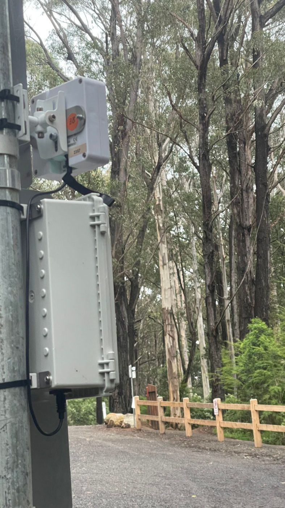

Trails & reserves
People counting for trails, parks and reserves
Weatherproof counters measure how many people and cyclists use your trails and open spaces, even where there is no power or network, so you can plan, fund and maintain them with evidence.

What you can measure
The data you get from day one.
Visitor counts
People and cyclists entering each trail or reserve, by hour, day and season.
Direction & flow
Which way people travel and where they enter and leave.
Peak periods
Your busiest times, days and holiday periods.
Trend over time
Growth or decline across months and years, and against weather and events.
Cyclists & vehicles
Separate counts where shared paths or access roads need them.
Site comparison
How each trail, entrance or reserve performs against the others.
Business impact
Make more money, save money and improve experiences.
Make more money
- Justify grant and capital funding with hard visitation numbers.
- Support concession, lease and event decisions with real demand data.
- Prioritise investment in the places people actually use.
Save money
- Schedule maintenance, cleaning and bin collection to real use, not a fixed calendar.
- Right-size ranger and staffing rosters to the busy periods.
- Avoid over-building facilities where demand does not support them.
Improve experiences
- Ease crowding and improve safety at popular trailheads.
- Put toilets, signage and parking where people actually go.
- Show the community the value and use of its open spaces.
This is part of how we help parks, trails and streets and councils. See the sensors we use outdoors.
FAQ
Questions & answers
Can you count people on trails without power or internet?
Yes. Outdoor counters run on battery, solar and mobile data, so they work on remote trails and in reserves with no fixed power or network.
Do the counters tell pedestrians and cyclists apart?
Yes. Where it matters, sensors separate pedestrians, cyclists and vehicles, with direction, so shared paths and access roads can be measured accurately.
Is the counting anonymous?
Yes. People are counted as anonymous shapes and movement. No images or personal information are captured.
See your places in a new light.
Book a 30-minute walkthrough and we'll scope a pilot for one of your sites: sensors, installation, software and insights in one agreement.